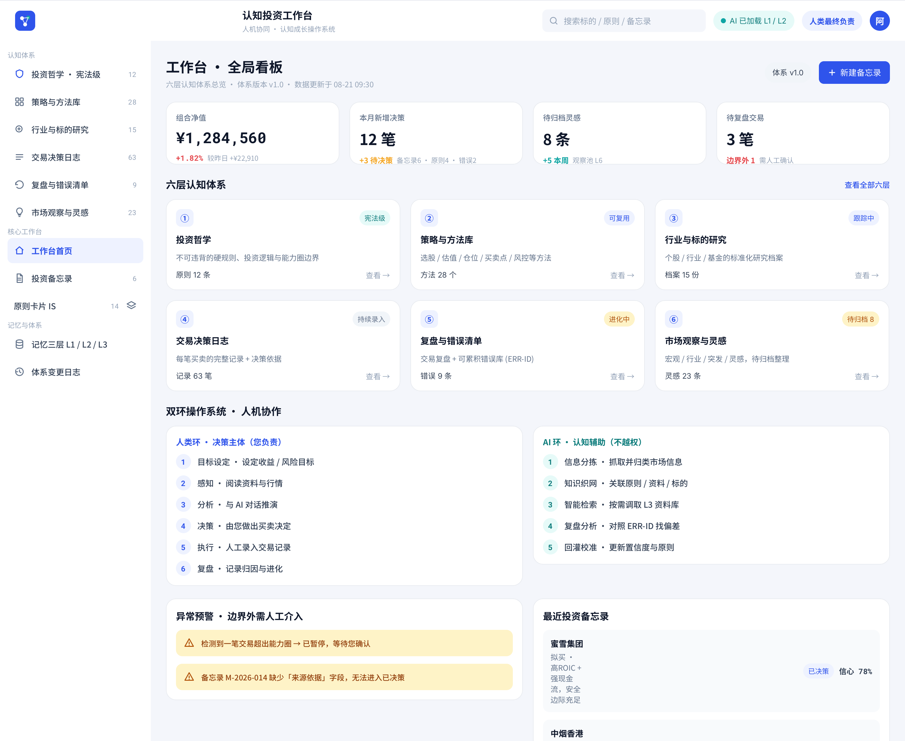
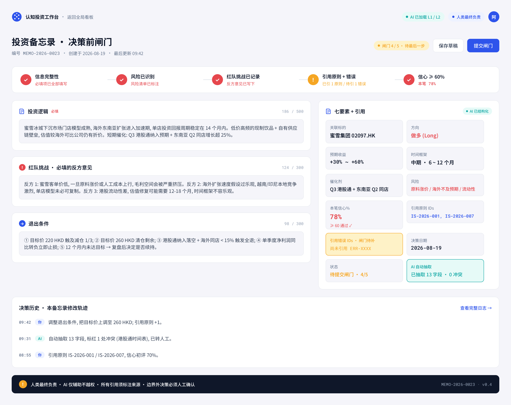
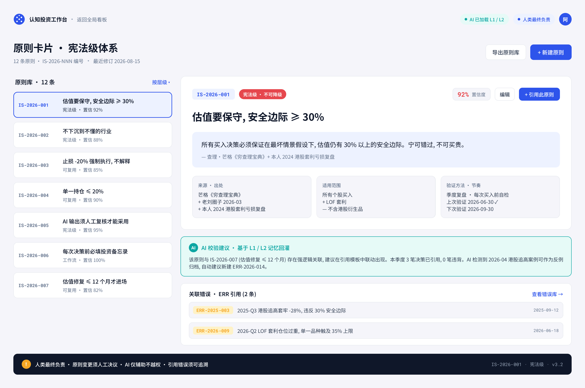
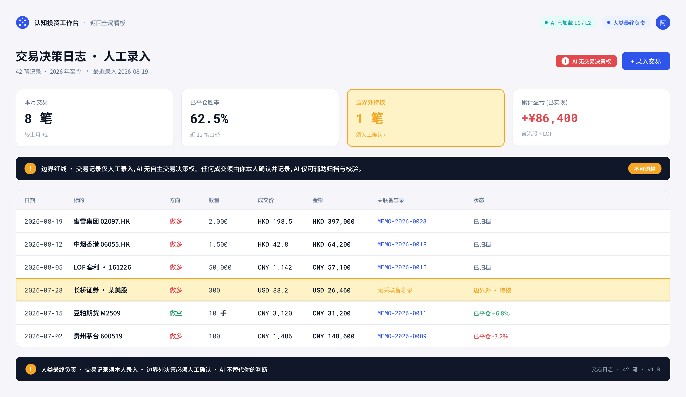
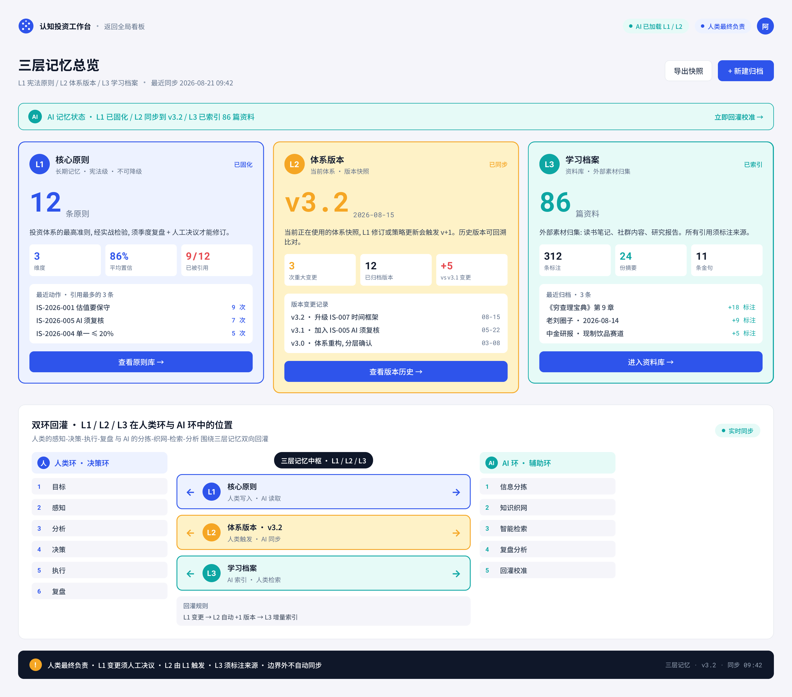
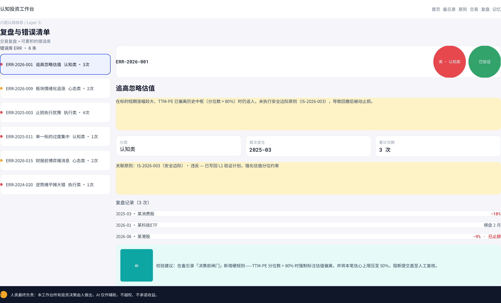
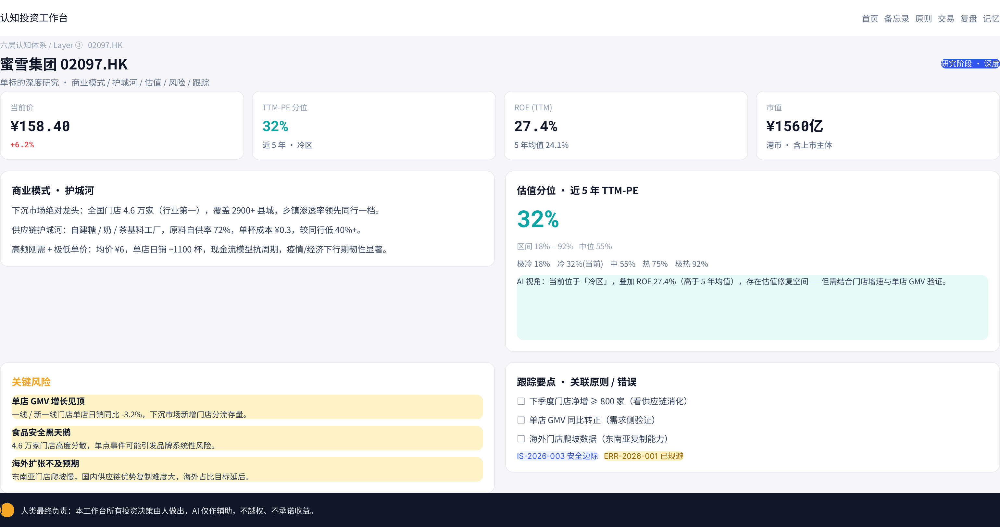
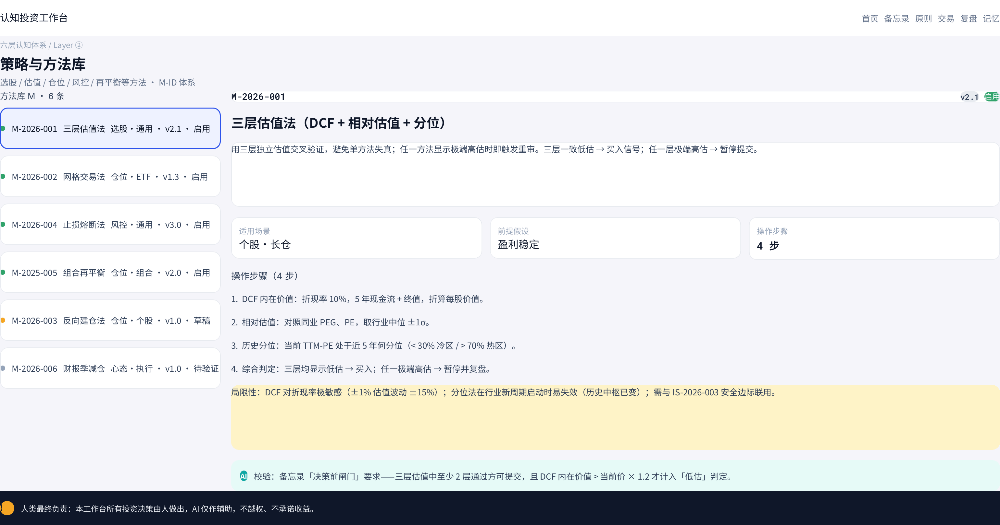
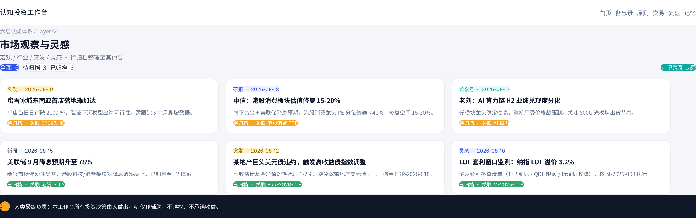

认知投资工作台 · UI 设计规格书
人机协同 · 认知成长型投资工作台 — 六层认知体系 + 三层记忆 + 双环操作系统的高保真设计交付。
1. 项目概述与交付物
本规格书来源于需求文档《投资工作台-需求规格书》，将其中 §1 的「人机协同认知成长型投资工作台」完整 UI 化。设计稿已在 Ardot 画布上完成 9 屏，本文件是其结构化落地说明，供专业代码开发智能体（如 Cline/Copilot）据此实现。
设计源文件
Ardot 文件：认知投资工作台-UI设计稿
fileId：717137198804445
URL：https://ardot.tencent.com/file/717137198804445
本交付包内容
- 本 HTML 规格书（含九屏截图与全部组件/数据规格）
screens/九屏 PNG（2x，3080×约1860）- 合并 PDF 视觉稿（整本 9 屏）
九屏总览
| 序号 | 屏名 | 层 / 定位 | Ardot 节点 |
|---|---|---|---|
| ① | 工作台首页（全局看板） | 总览入口 | 3:26 |
| ② | 投资备忘录 · 决策前闸门 | 交易决策日志前置 | 6:1 |
| ③ | 原则卡片 IS | Layer ① 投资哲学 | 7:1 |
| ④ | 交易决策日志 | Layer ④ 交易记录 | 9:1 |
| ⑤ | 三层记忆总览 | 三层记忆 L1/L2/L3 | 9:131 |
| ⑥ | 复盘与错误清单 | Layer ⑤ 复盘错误 | 10:1 |
| ⑦ | 行业与标的研究（蜜雪 02097.HK） | Layer ③ 标的研究 | 13:1 |
| ⑧ | 策略与方法库 | Layer ② 策略方法 | 13:70 |
| ⑨ | 市场观察与灵感 | Layer ⑥ 观察灵感 | 13:136 |
2. 设计原则与边界红线
四条核心原则
- 人类最终负责：所有投资决策由人做出，AI 仅辅助。
- 可解释可追溯：每条结论须标注来源（原则 ID / 错误 ID / 数据出处）。
- 双向认知进化：人类写入记忆、AI 读取并建议，记忆回灌双环。
- 异常人工介入：AI 遇边界外请求必须暂停并交人工。
四条边界红线（不可逾越）
- AI 无自主交易决策权：禁止自动下单、禁止替代人工确认。
- 任何结论 须标注来源，禁止无根据断言。
- 不做收益承诺，不暗示确定性。
- 每个页面须含 「人类最终负责」声明（深色免责条）。
warn-soft 背景三重提示；其余各屏底部统一深色免责声明条。3. 设计令牌 Design Tokens
3.1 颜色（语义化）
| Token | 色值 | 用途 |
|---|---|---|
| ink-900 | #0F1729 | 标题、主要文字 |
| ink-700 | #33425A | 正文、卡片内容 |
| ink-500 | #64738C | 次级文字、说明 |
| ink-400 | #94A3B8 | 标签、占位、三级信息 |
| bg-page | #F4F6FB | 页面背景 |
| surface | #FFFFFF | 卡片 / 容器底色 |
| border | #E8EBF0 | 描边、分割线 |
| primary | #2F54EB | 人类相关 / 品牌主色（indigo） |
| primary-soft | #EEEFFA | 人类元素软底、选中态 |
| ai | #0EA5A4 | AI 相关元素（teal） |
| ai-soft | #E6F7F6 | AI 元素软底、建议框 |
| up | #E5484D | 涨 / 盈利 / 正向（中国红涨惯例） |
| down | #15803D | 跌 / 亏损 / 负向（中国绿跌惯例） |
| warn | #F5A524 | 警示、待处理、风险 |
| warn-soft | #FFF6E5 | 警示软底（风险卡 / 边界外 / 局限性） |
| dark（免责条） | #0F1729 | 底部「人类最终负责」深色声明条 |
3.2 字体
| 用途 | 字体 | 字重 |
|---|---|---|
| 中文界面 / 正文 / 标题 | Noto Sans SC | Regular(400) / Medium(500) / SemiBold(600) / Bold(700) |
| 数字 / 金额 / 代码 ID / KPI | Roboto Mono | Medium(500) / SemiBold(600) / Bold(700)，等宽对齐（tabular） |
3.3 圆角 / 间距 / 阴影
| 类别 | 取值 |
|---|---|
| 圆角 | sm 6 / 卡片 12 / 大卡 16 / 胶囊 pill 999 |
| 间距 gap | 8 / 10 / 12 / 16 / 24 |
| 内边距 pad | 卡片 16–18，小卡 12–14，页头 24 |
| 阴影 | 极轻：0 1px 3px rgba(15,23,41,.06)，仅卡片用，页面背景无阴影 |
| 栅格 | 单屏宽度 1540（设计稿），内容区左右 padding 24，TopBar 高 56，PageHeader 高 84 |
4. 全局框架
每屏遵循统一骨架：TopBar（56px） → PageHeader（84px） → Main 内容区 → 免责声明条（52px）。左侧屏（②③④⑥⑧）在 Main 内采用 340px 列表 + fill 详情 双栏；右侧屏（①⑤⑦⑨）为单/多列自适应。
TopBar
左侧「认知投资工作台」品牌名（SemiBold）；右侧主导航 6 项：首页 / 备忘录 / 原则 / 交易 / 复盘 / 记忆（当前项高亮 primary）。高 56，白底，底边框。
PageHeader
左：面包屑（如「六层认知体系 / Layer ③」）+ 大标题 + 副标题；右：状态 pill（如「研究阶段·深度」/「AI 无交易决策权」）。高 84。
免责声明条
深色 #0F1729 底，左侧 amber 圆形「!」徽 + 白字「人类最终负责：本工作台所有投资决策由人做出，AI 仅作辅助，不越权、不承诺收益。」高 52。九屏统一。
5. 九屏视觉规格
以下每屏含设计稿截图与结构拆解。截图文件见 screens/0X_*.png。
工作台首页（全局看板）
节点 3:26
左侧栏（六层导航）
①投资哲学 ②策略方法 ③标的研究 ④交易决策 ⑤复盘错误 ⑥观察灵感，纵向列表，当前层高亮 primary-soft。
主区
4 张 KPI 卡（今日洞察 / 待处理闸门 / 本月交易 / 记忆版本）→ 六层认知体系 6 张导航卡 → 双环操作系统（人类环 6 步 + AI 环 5 步）→ 异常预警条 → 最近备忘录列表。
投资备忘录 · 决策前闸门
节点 6:1
关键结构
- 5 步决策前闸门（横向 stepper）：信息完整 ✓ / 风险已评估 ✓ / 红队挑战 ✓ / 引用原则 + 错误 !（未通过，amber）/ 信心 78%。未通过步骤用 amber 视觉阻塞提交。
- 左栏 3 卡：投资逻辑 / 红队挑战 / 退出条件（文本区）。
- 右栏 FactsCard：七要素 + 引用，12 字段 2×6 网格（标的 / 方向 / 数量 / 价格 / 金额 / 关联原则 / 关联错误 / 信心 / 期限 / 来源 / AI 提示 / 备注）；引用错误格用 warn-soft 警示。
- 决策历史：3 条时间线记录。
原则卡片 IS（Layer ①）
节点 7:1
关键结构
- 左：原则库列表 7 条 IS-ID（mono 对齐），选中态 IS-2026-001 高亮 primary-soft 描边。
- 右：详情卡：ID 徽章 + 「宪法级」红色徽 + 92% 置信 + 标题 + 引用陈述框 + 3 栏元数据（来源 / 范围 / 验证）+ AI 校验建议（teal 软底）+ 2 条关联错误（amber）。
交易决策日志（Layer ④）
节点 9:1
关键结构
- 页头红色徽章 AI 无交易决策权
- 4 张 KPI：本月 8 笔 / 胜率 62.5% / 边界外 1 笔（amber）/ 累计 +¥86,400（红涨）。
- 整宽深色边界红线提示条，含「不可逾越」标签。
- 交易表格 8 列 6 行：日期·标的·方向·数量·成交价·金额·关联备忘录·状态；第 4 行「长桥证券某美股」用 warn-soft 背景突出「边界外·待核」。
三层记忆总览（L1/L2/L3）
节点 9:131
关键结构
- AI 同步条（teal 描边）：L1 固化 / L2 v3.2 / L3 86 篇。
- 3 张层卡并排：L1 indigo「12 条原则·3 维度·86% 置信·9/12 被引用」/ L2 amber「v3.2·3 次变更·12 版本·+5」/ L3 teal「86 篇·312 标注·24 摘要·11 金句」。
- 双环回灌关系图：左人类环 6 步（indigo）+ 中间 L1/L2/L3 三层卡（含「人类写入·AI 读取」双向箭头）+ 右 AI 环 5 步（teal）+ 底部回灌规则。
复盘与错误清单（Layer ⑤）
节点 10:1
关键结构
- 左：错误库 6 条 ERR：认知/执行类红点、心态类 amber 点、选中 ERR-2026-001 用 indigo 描边。
- 右：详情：ERR-2026-001 + 红 pill「高·认知类」+ 绿 pill「已验证」+ 描述框 + 3 栏元数据（分类/首次发生/累计次数）+ 关联原则 IS-2026-003（amber 框）+ 3 条复盘记录（红/灰/红）+ AI 校验建议（teal）。
行业与标的研究 · 蜜雪集团 02097.HK（Layer ③）
节点 13:1
关键结构
- 页头 indigo pill「研究阶段·深度」。
- 4 KPI：当前价 ¥158.40（+6.2% 红）/ TTM-PE 分位 32%（teal 冷区）/ ROE 27.4% / 市值 ¥1560 亿。
- 上排：商业模式·护城河（3 段）+ 估值分位 32% 大字 + 5 档 tier（极冷/冷/中/热/极热）+ AI 视角（teal 框）。
- 下排：3 条 amber 关键风险 + 跟踪要点 □ 3 条 + IS/ERR 双 pill 关联。
策略与方法库（Layer ②）
节点 13:70
关键结构
- 左：方法库 6 条 M-ID：启用绿点 / 草稿 amber 点 / 待验证灰点。
- 右：M-2026-001 三层估值法：v2.1 灰 pill + 启用绿 pill + 描述 + 3 栏元数据（适用场景/前提假设/操作步骤）+ 4 步操作 + amber 局限性 + AI 校验（teal）。
市场观察与灵感（Layer ⑥）
节点 13:136
关键结构
- 筛选条：全部 6（indigo）/ 待归档 3 / 已归档 3 + teal「+ 记录新灵感」按钮。
- 3×2 灵感卡网格：source pill（突发 amber / 研报 indigo / 公众号 teal / 新闻 ink / 灵感 indigo）+ status pill（待归档 amber / 已归档绿）+ 关联标的/方法/错误。
6. 可复用组件库
以下组件在多处复用，开发时应抽为独立组件，统一 props 与样式变量。
| 组件 | 规格 | 出现屏 |
|---|---|---|
| TopBar | 高 56，白底，品牌名 + 6 项导航；当前项 primary 文字/下划线 | 全部 |
| PageHeader | 高 84，左面包屑+标题+副标题，右状态 pill；面包屑 ink-400、标题 ink-900 Bold 22 | 全部 |
| DisclaimerBar | 高 52，深色 #0F1729 底，amber 圆「!」+ 白字声明；九屏统一 | 全部 |
| KpiCard | 白卡，label(ink-400 12) + value(Roboto Mono Bold 22) + delta（up 红 / down 绿） | ①④⑦ |
| ListRow（列表项） | 高 64，圆角 12，左色点 + 文本；选中态 primary-soft 底 + primary 描边 1.5 | ③⑥⑧ |
| DetailCard | 白卡，头部 ID 徽(mono) + 右侧状态 pill，标题 Bold 20，描述/元数据区 | ③⑥⑦⑧ |
| Pill（胶囊） | 圆角 999，padding 横 10–14 / 纵 4–6，文字 SemiBold 12；配色见 §3.1 | 全部 |
| TableCard | 8 列，列宽用固定 px + 数字 Roboto Mono，行高由字号定，行内垂直居中；边界外行 warn-soft 底 | ④ |
| Stepper（闸门） | 横向 5 步，已完成绿色 ✓，未通过 amber 圆点 + !，当前步高亮 | ② |
| RelationCard（双环） | 左人类环 6 步(indigo) ↔ 中 L1/L2/L3 三层卡 ↔ 右 AI 环 5 步(teal)，双向箭头 + 回灌规则 | ⑤ |
| SourcePill / StatusPill | 小圆角 4，source 用语义色底（突发 amber/研报 indigo/公众号 teal/新闻 ink/灵感 indigo）；status 待归档 amber / 已归档绿 | ⑨ |
| AiSuggestionBox | teal 软底 #E6F7F6 + 「AI」角标（teal 底白字）+ 建议文字 | ③⑥⑦⑧ |
| WarnBox | warn-soft #FFF6E5 底 + 文字；用于风险/局限性/边界外 | ④⑥⑦⑧ |
7. 数据模型与 ID 体系
四类核心实体使用语义化 ID 前缀，配色与组件呼应。所有实体必须可追溯到来源。
| 实体 | ID 格式 | 代表色 | 关键字段 |
|---|---|---|---|
| 原则 Principle | IS-YYYY-NNN | primary | id, title, statement, source, scope, validation, confidence, relatedErr[], version |
| 方法 Method | M-YYYY-NNN | ink-700 | id, title, scene, assumption, steps[], status(启用/草稿/待验证), version, limitation |
| 错误 Error | ERR-YYYY-NNN | warn | id, title, category(认知/执行/心态), severity, firstSeen, occurrences, relatedIs, reviews[], verified |
| 备忘录 Memo | MEMO-YYYY-NNNN | primary | id, gate[5], logic, redteam, exit, facts[7], relatedIs[], relatedErr[], confidence, decisions[] |
| 记忆 Memory | L1 / L2 / L3 | L1 primary / L2 warn / L3 ai | L1 原则集·维度·置信；L2 体系版本·变更；L3 文章·标注·摘要·金句 |
8. 导航与交互流程
8.1 六层导航
左侧栏 / TopBar 六项正确映射到对应屏：① 原则(③屏) · ② 策略(⑧屏) · ③ 研究(⑦屏) · ④ 交易(④屏) · ⑤ 复盘(⑥屏) · ⑥ 灵感(⑨屏)；首页(#①)为总览。
8.2 双环操作系统
- 人类环 6 步（indigo）：观察 → 假设 → 录入备忘录 → 决策前闸门 → 执行 → 复盘写回。
- AI 环 5 步（teal）：读取记忆 → 生成建议 → 标注来源 → 等待确认 → 回灌记忆。
- 两环通过三层记忆衔接；AI 环不得跨过「执行/交易」环节。
8.3 决策前闸门（硬性）
备忘录提交前必须 5 步全通过：信息完整 → 风险评估 → 红队挑战 → 引用原则/错误 → 信心阈值。任一步 amber 未通过则阻塞提交，并提示人工复核。建议规则示例：TTM-PE 分位 > 80% 时信心上限压至 50%；三层估值中至少 2 层通过方可提交。
9. 开发交接说明
建议技术栈
- 框架：React 18 + TypeScript（或 Vue 3），按屏拆分路由
//memo/principle/trade/memory/review/research/:code/methods/inspiration。 - 样式：Tailwind CSS，将 §3 令牌写入
tailwind.config的 theme.extend（颜色、字体、圆角、间距）。 - 字体：通过
@fontsource/noto-sans-sc与@fontsource/roboto-mono引入，KPI/金额用 tabular-nums。 - 图标：使用 lucide-react 等 SVG 图标库；严禁 emoji，状态圆点用 8×8 圆角方块 div。
- 状态管理：原则/方法/错误/备忘录/记忆建议用 Zustand 或 Pinia 单 store，记忆层支持「人工写入 + AI 建议待确认」双态。
给开发智能体的硬性约束（来自边界红线）
- 交易记录只能人工录入，AI 模块不得自动生成或替填交易行；边界外记录须人工复核后才能解除 warn 态。
- 所有 AI 建议须带来源标注与「AI」角标，不得伪装成确定结论。
- 红涨绿跌：涨/盈利/正向用
up #E5484D，跌/亏损/负向用down #15803D（中国惯例，与美股相反）。 - 每个页面渲染时强制包含底部「人类最终负责」声明条（深色 #0F1729）。
- 决策前闸门为硬性阻塞逻辑，未全通过不得提交备忘录。
目录结构建议
src/ ├─ tokens/ (design tokens: colors, fonts, radius, spacing) ├─ components/ (TopBar, PageHeader, DisclaimerBar, KpiCard, ListRow, │ DetailCard, Pill, TableCard, Stepper, RelationCard, │ SourcePill, AiSuggestionBox, WarnBox) ├─ screens/ (Home, Memo, Principle, Trade, Memory, Review, │ Research, Methods, Inspiration) ├─ store/ (principles, methods, errors, memos, memory) └─ lib/ (id-generator, gate-validator, color-semantics)